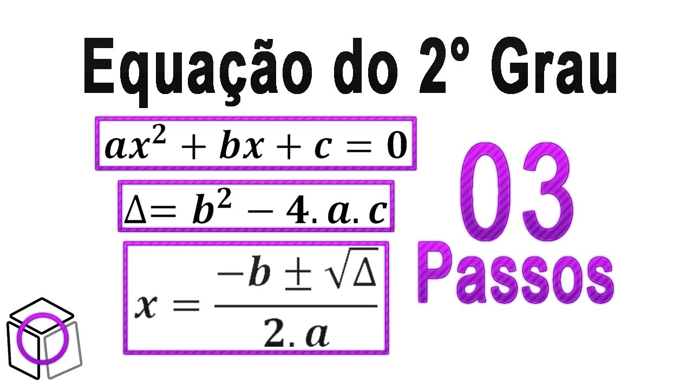
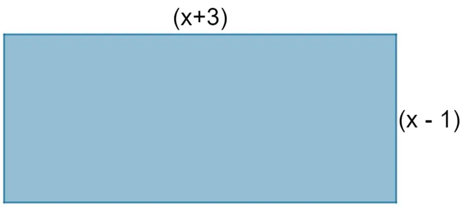

Oficina de matemática
O proposito do site é ajudar alunos com dificuldades em formúlas e calculos matemáticos!
Conteúdos:
Teorema de Pitágoras:
É basicamente uma formula para calcular a hipotenusa.Lembrando que o quadrado da hipotenusa é igual a soma dos quadrados dos catetos, a formula é: a2+b2=c2 em que a e b são os catetos e c é a hipotenusa.

Equação do 2 grau:
Uma equação do 2° grau é uma equação com uma incógnita que é expressa da seguinte forma: ax2 + bx + c = 0.Toda equação do segundo grau possui pelo menos uma solução real, lembrando que quando o valor do discriminante é um número positivo que não possui raiz quadrada exata, então podemos dizer que a equação não possui solução.

Potenciação
A potenciação é basicamente uma operação matemática que representa a multiplicação de fatores iguais. Ou seja, usamos a potenciação quando um número é multiplicado por ele mesmo várias vezes.
exemplos:
a0 = 1 qualquer base elevada a zero é igual a um
a1 = a qualquer base elevada a um é igual a ela mesma.
a-n = 1/an qualquer base elevada a um expoente negativo é igual ao inverso da base elevada ao expoente positivo.

Exercicios:
A área do triângulo que possui base medindo 5 cm e hipotenusa medindo 13 cm é igual a:
(A) 30 cm²
(B) 60 cm²
(C) 24 cm²
(D) 16 cm²
(E) 12 cm²
Determine o valor de cada uma das potências abaixo.
(A) 25¹
(B) 150
(C) (7/9)-2
Uma região retangular teve as suas dimensões descritas em metros,confoeme a imagem a seguir:

O valor de x que faz com que a área dessa região seja igual a 21 é:
(A) 1
(B) 2
(C) 3
(D) 4
(E) -6